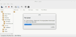
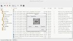

gMTP Features
gMTP supports:
- Upload, Download, Removal, Renaming and Moving of files as needed.
- Drag'n'Drop support for uploading files to the device.
- Folder Creation and Deletion.
- Album Art management.
- Metadata support for MP3, WMA, OGG and FLAC audio files, ensuring correct track information
on your media player when uploading audio files.
- Device Naming support.
- Basic creation, editing and deletion of playlists. Able to import and export playlists
in *.m3u format.
For other needs like managing your audio collection or ripping CDs I suggest you look at
another full featured media application.
Support and Discussion Boards
Support and Discussion Boards can be found on the Sourceforge project page located here:
http://sourceforge.net/projects/gmtp
Screen Shots
- 
File Upload to Device
-
Default Interface
-
gMTP Properties
-
Preferences
- 
Album Art
-
Playlist Editor
Requirements
- Oracle Solaris 10, other UNIX or UNIX-like system
- libvorbis (v1.0.1)
- libflac (v1.2+) - FLAC Hompage
- libmtp (v1.1.6) - LIBMTP Hompage
- libid3tag (v0.15.1b) - MAD Download Page
- GTK2+ Version. (Recommended for Solaris, FreeBSD and older Linux Distributions)
- GTK+-2.0 (v2.4.9)
- Glib-2.0 (v2.4.1)
- GConf-2.0 (v2.6.1)
- GTK3+ Version. (Recommended for newer Linux Distributions)
- GTK+-3.0 (v3.0.0)
- Glib-2.0 (v2.26.0)
- GIO-2.0 (v2.26.0) - Needed for GSettings support within GLib-2.26.